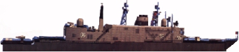
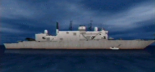
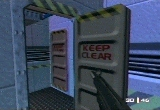
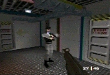
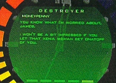
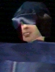
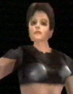
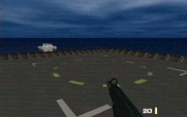

|
.
| Goldeneye
Version Beta : Frigate |
| Pas
grand-chose de bien croustillant sur le Bateau. Il s'appellait avant
"Destroyer" et non Frigate comme maintenant. Voici une Comparaison
des 2 Navires vus de profil. |


Ci-dessous, les Portes ont changé d'allure.
Pour faire apparaitre ces Portes Beta, allez par ici !


Il semblerait que Xenia et le Helicopter Pilot étaient de la partie durant cette Mission, comme le laisse entendre Moneypenny. |



Enfin, et pas des moindres, on peut faire décoller l'Helico durant l'Image d'Introduction ! Il faut un Code, et lorsque vous arriverez devant l'Heliport, voilà ce que vous verrez ! Par contre, bien qu'Absent, vous ne pourrez pas marcher là où est sensé être l'Helico... Pour le Code, allez voir en Bas de la Page Modificateur ! |
